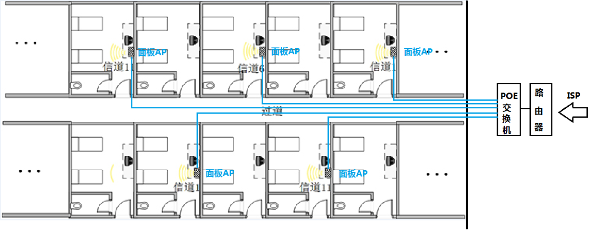
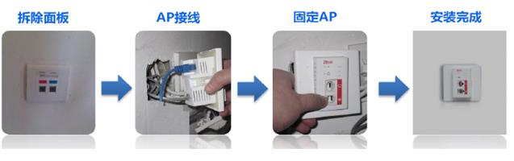
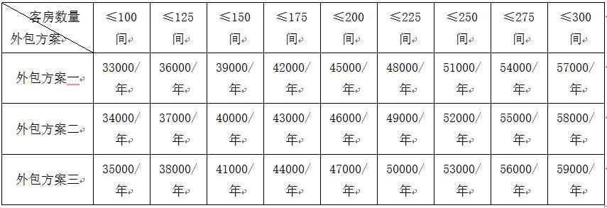

维护外包一体化解决方案
随着劳动力成本的不断提高，各个酒店都已经把降低用工比例作为经营管理中节流的重要手段，但我国酒店业目前的平均用人比例水平，还是比国际上的平均水平高出10%-20%。造成的原因有多种，外包服务概念没有普遍采用，缺乏高质量的专业公司，是多种原因的主要症结。
外包服务是在国际酒店行业普遍采用的方法。以电脑房为例，400间客房规模的酒店，电脑房的员工一般只有三到四个，这三到四个员工主要做一些像更换水晶头，重启交换机等事情，其他都是由外面专业公司来完成的。设备等的故障排查，大范围的更新改造工程，完全由专业公司承担。其他部门也有许多业务是采用外包服务方法的。
目前国内酒店业，对外包服务概念的接受还在初级阶段，使用范围还很有限。
对于中小型酒店来讲，雇佣专职工程师需要支付相应的工资、福利和保险等费用，而维护工作量又不大，人员支出会显得较高。而采用我司的一站式管家服务，可以大大降低因系统维护而造成的相关费用，节约企业开支。我们为企业提供全方位的服务，包括建立系统设备档案、系统维护记录分析等服务项目。工程师不仅经验丰富，而且随时能获得公司强大的技术支持，保障用户系统正常运行。而企业会面临很多技术问题：硬件、软件、局域网、互联网、数据库等，相关内容往往需很多专业工程师才能完成，我公司有全面的技术背景、有能力为企业提供如系统维护、硬件、软件等全面的技术服务。
无线网络拓扑图：

采用86面板式无线AP，在客房内安装无线AP，在弱电管井加装POE供电交换机，通过酒店客房原有网线对AP进行供电及网络信号传输，以达到无线网络覆盖。覆盖效果好、充分利用现有资源、安装简便、不破坏原有布局。仅需要将墙面有线接口面板更换为面板型AP即可。安装时间短，不影响正常运营。

一、合作方式
签订整体外包合同（合同期为5年），我司为贵酒店免费搭建无线网络，并完成酒店无线网络工程施工。合同期内负责免费维护。外包项目可选。在合同期指定的外包项目中，若发现硬件出现问题时，将及时向客户通报。如果需要向我司购买硬件，我司将提供产品的规格、价格供客户参考；凡在我司购买的硬件产品，我方保证产品的质量。
二、外包项目/费用
免费远程接入服务，实现远程维护，将现有监控系统进行手机远程实时查看。
外包方案一：有线客网，有线办公网，监控系统
外包方案二：有线客网，有线办公网，监控系统，（电话交换机或有线电视系统任选其一）
外包方案三：有线客网，有线办公网，监控系统，电话交换机，有线电视系统
